第 61 题
流水段寄存器的主要作用是（ ）。
A． 存储最终结果 B． 缓冲并传递阶段间数据 C． 检测数据冲突 D． 提高主频 答案与解析 答案：B
流水段寄存器位于相邻阶段之间（如IF/ID、ID/EX寄存器），用于存储前一阶段的输出数据，作为下一阶段的输入。主要作用是在流水线各阶段之间缓冲并传递数据，确保指令执行的连续性和并行性，B正确。
教材第 99 页 第 62 题
指令流水线中，结构冒险是指（ ）。
A． 多条指令同时使用同一硬件资源 B． 指令执行顺序错误 C． 数据相关导致的冲突 D． 控制转移指令引起的冲突 答案与解析 答案：A
结构冒险是指多条指令在同一时钟周期内争用同一硬件资源（如存储器、寄存器等）而产生的冲突，A正确；指令执行顺序错误可能是控制冒险导致的，B错误；数据相关导致的冲突是数据冒险，C错误；控制转移指令引起的冲突是控制冒险，D错误。
教材第 99 页 第 63 题
只使用数据旁路（转发）技术能够解决下列（ ）。
A． 结构冒险 B． 相邻两条ALU 运算指令之间的数据冒险 C． 控制冒险 D． load-use 冒险 答案与解析 答案：B
数据旁路（转发）技术通过直接传递中间结果，使后指令无需等待前指令完成写回阶段。相邻两条ALU运算指令之间的数据冒险可以通过将前指令的EX阶段得到的结果直接传给后指令的ALU输入端以解决数据相关，无需阻塞，B正确；结构冒险由硬件资源争用引发（如总线冲突），需通过硬件设计（如多端口寄存器堆）解决，控制冒险由分支指令导致，需通过分支预测、延迟槽等技术处理，A、C错误；load-use冒险，需要使用转发+硬件阻塞技术才能够解决，D错误。
教材第 99 页 第 64 题
某流水线处理器采用数据旁路（转发）技术，在执行下列指令序列仍可能产生阻塞的情况是 （）。注：
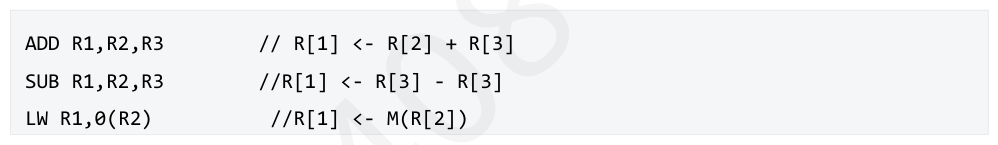
A． ADD R1,R2,R3; SUB R4,R5,R6 B． ADD R1,R2,R3; SUB R4,R1,R6 C． LW R1,0(R2); ADD R3,R4,R5 D． LW R1,0(R2); ADD R3,R1,R4 答案与解析 答案：D
ADD R1，R2，R3：将寄存器R2与R3的值相加，结果存入R1。SUBR4， R5，R6：将寄存器R5的值减去R6的值，结果存入R4。两条指令无寄存器共享，无数据依赖，无需数据转发，A错误； ADD R1，R2，R3：R1 = R2 + R3（写R1）。SUB R4，R1，R6：R4 = R1 - R6（读R1）。显然存在RAW冒险，但可通过数据转发将ADD在EX/MEM段的运算结果直接传递给SUB的EX阶段，流水线不会停顿，B错误； LW R1，0（R2）：从内存地址（R2+0）读取数据，存入R1（加载操作）。ADD R3，R4，R5： R3 = R4 + R5，与R1无关。两条指令无寄存器共享，无数据依赖，无需数据转发，C错误。 LW R1，0（R2）：R1=内存[R2]（写R1，加载结果在MEM阶段可用）。ADDR3，R1， R4：R3 = R1 + R4（读R1，需在EX阶段使用R1的值）。属于典型的load-use类型数据冒险，即使使用转发技术仍需硬件阻塞，D正确。
教材第 99 页 第 65 题
在使用动态预测中的一位预测位解决控制冒险时，1 表示预测转移，0 表示预测不转移。初始状态为0。若分支实际执行结果依次为不转移，转移，转移则第三次预测的结果是（ ）。
A． 转移 B． 不转移 C． 无法确定 D． 预测位完全失效 答案与解析 答案：A
一位动态预测可看作完全根据上一次转移情况进行预测，上一次转移则变为1，上一次不转移则变为0。注意初始状态应算第一次预测，故第一次预测结果是0，实际不转移，第二次预测结果仍是0，实际发生转移，故第三次预测结果是1，即转移，A正确。
教材第 99 页 第 66 题
在使用动态预测中的两位预测位解决控制冒险时，11 表示预测强转移，10 表示预测弱转移， 01 表示预测弱不转移，00 表示预测强不转移。初始状态为10。若分支实际执行结果依次为不转移，转移，转移，不转移，转移，不转移，则预测错误的次数是（）。
A． 2 B． 3 C． 4 D． 5 答案与解析 答案：D
第一次：实际不转移，预测：转移（错误），10→00，错误次数：1。第二次：实际转移，预测：不转移（错误），00→01，错两位预测位的状态转移图误次数：2。第三次：实际转移，预测：转移（错误），01→11（强转移），错误次数：3。第四次：实际不转移，预测：转移（错误），11→10，错误次数：4。第五次：实际转移，预测：转移（正确），10→11，错误次数：4。第六次：实际不转移，预测：转移（错误），11→10，错误次数：5，D正确。
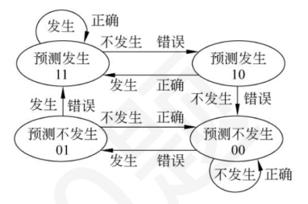
教材第 99 页 第 67 题
以下是一段MIPS 指令序列：假定采用“取指、译码/取数、执行、访存、写回”这种五段式流水线方式，并控制在时钟的前半周期写寄存器堆，后半周期读寄存器堆，由于在第三条指令执行了无条件跳转指令，因此有可能发生控制冒险。如果不采取处理，发生转移时会产生以下“转移开销”：将按顺序预取的指令废除（即“排空流水线”）、从转移目标地址重新取指令。我们把由于流水线阻塞而带来的延迟执行周期数称为延迟损失时间片C。现在有以下两种不同的流水线数据通路：第一种流水线数据通路采取的方案是在mem 阶段将目标转移地址写回PC（袁书方案）；第二种流水线数据通路采取的方案是在ID 阶段译码后通过一些简单电路形成目标转移地址并写回PC；以下说法错误的是（）
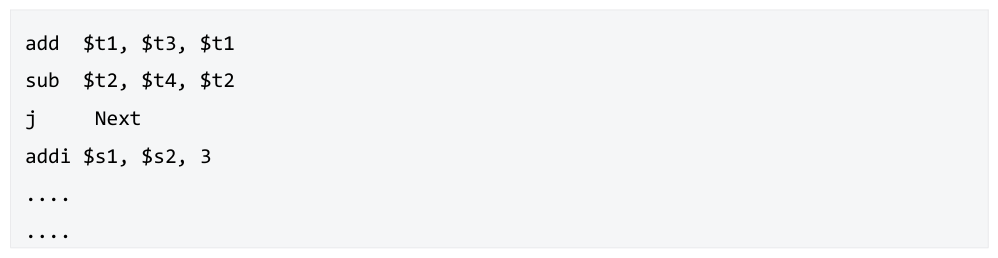
A． 第一种方案的延迟损失时间片C=2； B． 第二种方案的延迟损失时间片C=1； C． Cache 缺失、TLB 缺失和缺页的发生会引起流水线的阻塞 D． 异常和中断的发生也会引起指令冒险 答案与解析 答案：A
对于A 选项，如图所示，C=3；对于B选项，如图所示： C 选项，见笔记该部分D 选项，与分支冒险一样，当某条指令执行过程中发现异常或中断时，可能它后面的多条指令已经被取到流水线中正在执行。例如，ALU运算类指令发现“溢出”时，已经到Exec阶段的结束了，此时，它后面已有两条指令进入了流水线。
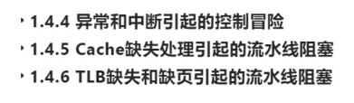
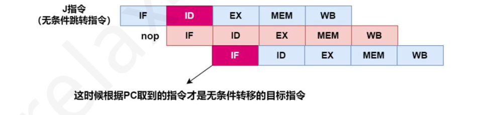
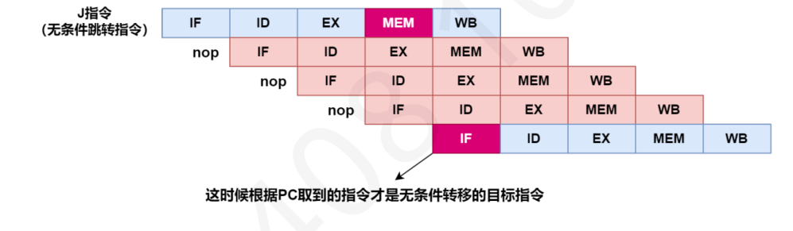
教材第 99 页 第 68 题
在理想的RISC 处理器5 段流水线（IF→ID→EX→MEM→WB）中执行以下指令序列，采用转发和硬件阻塞处理数据冒险：则平均CPI 是（ ）。
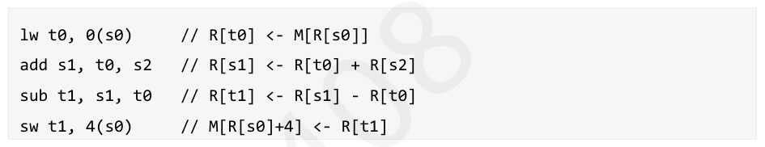
A． 2.0 B． 2.25 C． 2.5 D． 3.0 答案与解析 答案：B
对于理想的RISC处理器5段流水线（IF→ID→EX→MEM→WB），每个流水段占一个时钟周期，执行了四条指令，所以要求总时钟周期。点击图片可查看完整电子表格只有lw指令和add指令出现load-use冒险，无法只通过转发技术解决，需阻塞一个时钟周期， 9共9个时钟周期，CPI =4= 2.25 ， C 正确。
教材第 100 页 第 69 题
在理想的RISC 处理器5 段流水线（IF→ID→EX→MEM→WB）中执行以下指令序列，不采用转发技术，仅通过插入气泡处理数据冒险，寄存器可在同一周期的前半周期写，后半周期读：则总执行时钟周期数是（）。
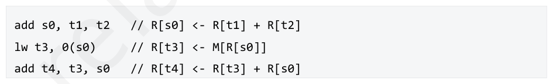
A． 9 B． 10 C． 11 D． 12 答案与解析 答案：B
点击图片可查看完整电子表格共11个时钟周期，D正确。
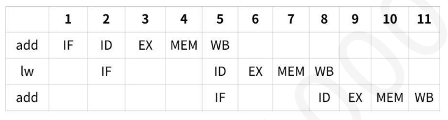
教材第 100 页 第 70 题
以下是一段mips 指令序列：以上指令序列中，第1，2，3 条指令发生数据相关。假定采用“取值、译码/取数、执行、访存、写回”五段式流水线方式，那么在1.不采用“转发技术”，但是采用在时钟的前半周期写寄存器堆，后半周期读寄存器堆的方式，2.采用“转发技术时”，3.两者都不采用，需要在第3 条指令前分别加入 ）条空操作（nop）指令才会使这段程序不发生数据冒险。 （
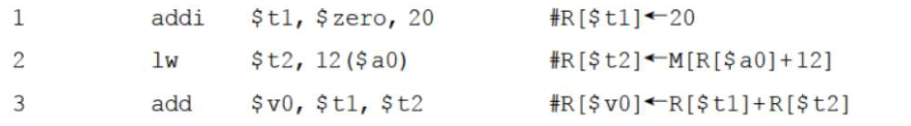
A． 3, 1, 3 B． 1, 3, 2 C． 3, 2, 3 D． 2, 1, 3 答案与解析 答案：D
此题是关于load-use 数据冒险的处理方式。若不采用数据旁路（转发）技术，也不采用在时钟的前半周期写寄存器堆，后半周期读寄存器堆的方式，则需要插入3 个nop，把后一条指令的ID 段阻塞在前一条指令的WB 段之后。采用寄存器前半周期写后半周期读，可以节省一个时钟，如下图所示。采用转发技术，则只需要插入一个nop 即可，将ID 隔到前一条load 指令的MEM 后，转发硬件路线由mem 送到IF/ID 流水线寄存器组。流水线冒险简单总结如下：
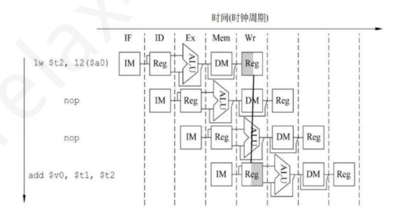
教材第 100 页 第 71 题
在采用“取指、译码/取数、执行、访存、写回”的5 段流水线处理器中，执行如下指令序列。其中可能会产生控制冒险的是（）。
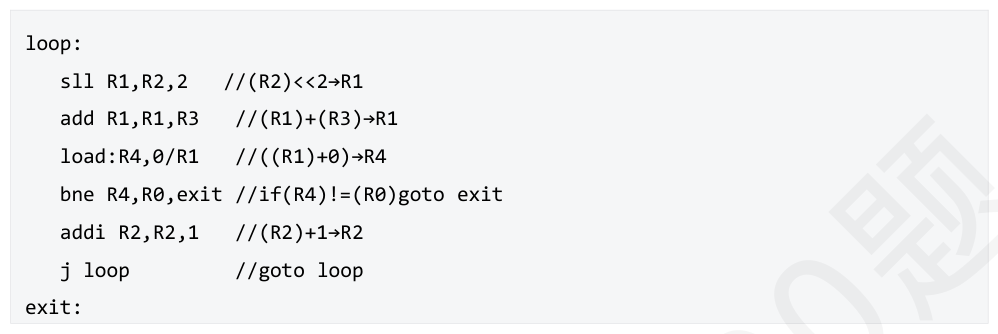
A． 指令1 B． 指令3 C． 指令4 D． 指令4 和指令6 答案与解析 答案：D
通常，条件转移指令和无条件转移指令都可能导致控制冒险，故本题选D。
教材第 101 页 第 72 题
可能导致指令执行出现控制冒险的情况是（ ）。
A． 执行条件跳转指令 B． 执行函数调用 C． DMA 数据传输完成 D． 以上都是 答案与解析 答案：D
条件跳转指令若判断标志位满足条件则会发生跳转，导致控制冒险；函数调用本质上也是通过跳转指令实现的，可能会导致控制冒险；DMA（直接内存访问）完成时通常会触发中断，中断会打断当前程序执行，CPU需暂停流水线，保存现场，并跳转到中断处理程序，这相当于一次隐含的跳转，导致指令流改变，同样属于控制冒险，故D正确。
教材第 101 页 第 73 题
流水线计算机中，下列语句发生的数据相关类型是（ ）。
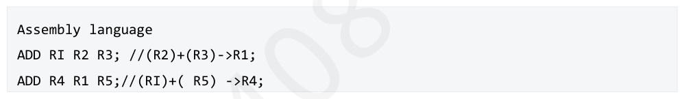
A． 写后写 B． 读后写 C． 写后读 D． 读后读 答案与解析 答案：C
第一条指令写R1，紧随的第二条指令R1作为其输入，此时发生写后读数据冒险，C正确。
教材第 101 页 第 74 题
以下关于流水段的功能部件的描述中，错误的是（ ）。
A． 所有功能部件都要用组合逻辑实现 B． 同一个功能部件可以在不同的流水段中被使用 C． 寄存器写只能在指令结束时的“写回”阶段被使用 D． 每个功能部件在每条指令中都只被使用一次 答案与解析 答案：B
一个部件在不同流水使用，会发生资源冲突，B错误。
教材第 101 页 第 75 题
CPU 片上Cache 分别采用独立的指令Cache 和数据Cache 的目的是（ ）。
A． 增加Cache 的容量 B． 区分指令和数据 C． 缓解流水线中的数据冒险冲突 D． 缓解流水线中的结构冒险冲突 答案与解析 答案：D
将指令Cache和数据Cache分离的主要目的是避免资源相关冲突。在流水线工作中，当同时需要取指令和取数据时，如果不分开，就会造成结构冒险冲突，从而导致流水线断流，将指令Cache和数据Cache分开后，就能同时满足取指令和取数据的要求，从而提高流水线运行效率，计算机通过不同的时间段来区分指令和数据，在取指阶段取出的是指令，在执行阶段取出的是数据，D正确。
教材第 101 页 第 76 题
结构冒险、数据冒险和控制冒险通常会引起流水线阻塞。分支预测、指令调度、延迟槽、增加功能单元（比如加法器、ALU）等在处理器流水线层和编译层实现的技术均用于减少或者消除这些冒险引起的阻塞。在这些技术中，能同时减少或者消除结构冒险和数据冒险的技术是（）。
A． 分支预测 B． 增加功能单元（比如加法器、ALU） C． 延迟槽 D． 转发技术 答案与解析 答案：B
分支预测器是现代指令流水线式CPU中非常关键的技术，它在分支指令执行结束前猜测哪路分支将会被执行，以此来提高处理器指令流水线的效率，是为了解决控制相关，A错误；增加功能部件可以减少资源冲突，消除结构冒险，B 正确；分支延迟槽（Branch delayslot），简单地说就是位于分支指令后面的一条指令，不管分支发生与否其总是被执行，而且位于分支延迟槽中的指令先于分支指令提交，是为了解决控制相关，C错误；转发技术可以消除或减少数据冒险，D错误。
教材第 101 页 第 77 题
超标量流水线的特点是（ ）。
A． 每个时钟周期只执行一条指令 B． 每个时钟周期执行多条指令 C． 指令执行顺序固定不变 D． 不需要指令译码阶段 答案与解析 答案：B
超标量流水线通过在一个时钟周期内同时发射和执行多条指令来提高性能，B正确；普通流水线每个时钟周期可能只执行一条指令，A错误；超标量流水线中指令执行顺序可能会动态调整，C错误；指令译码阶段是指令执行的必要阶段，超标量流水线也需要，D错误。
教材第 101 页 第 78 题
关于流水线数据通路，下列说法正确的是（ ）。
A． ①②④ B． ②③ C． ②④ D． ②③④ 答案与解析 答案：C
①错误，普通流水线在理想状态下，其CPU的CPI为1，而超标量流水线的CPI是小于1。
教材第 102 页 第 79 题
通过编译程序将多条能够并行操作的指令组合成一条指令，这种技术称做（ ）。
A． 超标量技术 B． 超流水线技术 C． 超长指令字技术 D． 超字长技术 答案与解析 答案：C
这是超长指令字技术的基本概念，C正确。
教材第 102 页 第 80 题
下列关于流水线技术，说法正确的是（ ）
A． 通过编译器来辅助完成指令打包和冒险处理的叫动态多发射 B． 超标量处理器大多采用静态多发射 C． 指令按序发射和完成，在不出现异常的情况下一定不会出现写后写（WAW）数据冒险 D． 静态多发射处理器的冒险处理包括数据冒险、控制冒险和结构冒险 答案与解析 答案：C
A 错误，A 选项描述的是静态多发射，指令打包的结果可看作将同时发射的多条指令合并到一个长指令中，即超长指令字技术。 B 错误，超标量处理器采用动态多发射技术，通过在指令执行过程中由处理器硬件动态完成流水线调度来完成指令打包和冒险处理。 C 正确，若前一条指令和后一条指令都需要对同一个寄存器进行写入，则称这两条指令是写后写相关的。这种相关性，在无序发射或乱序执行时可能会发生数据冒险，而在按序发射和完成时，两条指令的写寄存器时机和指令顺序一致，不会发生数据冒险。 D 错误，静态多发射处理器的冒险处理不包括结构冒险，因为数据通路中功能部件及其个数是确定的，所以同一时钟周期内发射的指令类型和指令个数是受限的。例如，如果ALU运算部件和存储访问部件独立设置，并只各提供一套，则只能同时发射一条ALU指令/分支指令和一条Load/Store指令。所以不会发生结构冒险。
教材第 102 页 第 81 题
向量处理器属于（ ）计算机。
A． SISD B． SIMD C． MIMD D． MISD 答案与解析 答案：B
向量处理器是一种SIMD（单指令流多数据流）计算机，它通过一条指令同时对多个数据元素进行操作，提高数据并行处理能力，B正确。
教材第 102 页 第 82 题
关于硬件多线程的说法，错误的是（ ）
A． 单核CPU 同一时刻一定只有一个线程在执行 B． 多核CPU 使用多线程才能发挥硬件优势 C． 超线程可以看作细粒度多线程和超标量处理器的结合 D． 粗/细粒度多线程都是指令级并行，线程级不并行 答案与解析 答案：A
A 错误，单核CPU 在支持超线程的情况下，同一时刻可以有多个线程在执行。超线程物理上只有一个核心，但是逻辑上有多个。比如一个线程在I/O 或者访存的时候，可以执行另一个线程进行计算，两个线程不冲突，可进一步利用硬件资源。 B 正确，多核CPU 如果不使用多线程，那么一定有多个核心处于闲置状态，造成资源浪费。 C 正确，SMT技术充分利用了超标量处理器的多通道、动态指令调度和寄存器重命名的机制，可以在一个周期里面发射来自不同Thread的多个指令，可以看作细粒度多线程和超标量处理器的结合。 D 正确，只有超线程是线程级并行。
教材第 102 页 第 83 题
硬件多线程的基本思想是（ ）。
A． 在一个处理器中同时运行多个进程 B． 在一个处理器中同时运行多个线程的上下文 C． 多个处理器同时运行一个线程 D． 多个处理器同时运行多个线程 答案与解析 答案：B
硬件多线程的基本思想是在一个处理器中同时维护多个线程的上下文，当一个线程因等待资源而暂停时，处理器可以切换到另一个线程继续执行，提高处理器利用率，B正确；在一个处理器中同时运行多个进程是多任务操作系统的功能，通常依赖操作系统的时间分片，与硬件多线程的底层机制不同，A错误；多个处理器同时运行一个线程是并行计算的一种方式，但不是硬件多线程的基本思想，C错误；多个处理器同时运行多个线程是多处理器系统的常见工作方式，D错误。
教材第 102 页 第 84 题
以下不存在的计算机类型是（ ）
A． SISD B． SIMD C． MISD D． MIMD 答案与解析 答案：C
MISD是指同时执行多条指令，处理同一个数据，实际上不存在这样的计算机。 SISD 通常是单处理机，有时候也设计成标量流水线，提高速度。 SIMD 是一个指令流同时对多个数据进行处理，成为数据级并行技术，通常由一个指令控制部件和多个处理单元组成，每个单元有自己的地址寄存器，这样就可有不同的数据地址，指令逻辑相同但数据不同，这样可以并行处理相同指令，适合for 循环代码，不适合case/switch。 MIMD 分为多计算机系统和多处理器系统。
教材第 102 页 第 85 题
多核处理器是指（ ）。
A． 一个处理器芯片中包含多个处理核心 B． 多个处理器芯片组成的系统 C． 一个处理器中包含多个寄存器 D． 一个处理器中包含多个ALU 答案与解析 答案：A
多核处理器是将多个处理核心集成在一个处理器芯片中，这些核心可以独立执行指令，提高并行处理能力，A正确；多个处理器芯片组成的系统是多处理器系统，B错误；一个处理器中包含多个寄存器或多个ALU是处理器内部的设计优化，不是多核处理器的定义，C、D错误。
教材第 102 页 第 86 题
共享内存多处理器（SMP）的特点是（ ）。
A． 多个处理器共享同一内存空间 B． 每个处理器有独立的内存空间 C． 处理器之间通过消息传递进行通信 D． 处理器只能访问自己的本地内存 答案与解析 答案：A
共享内存多处理器（SMP）中，多个处理器共享同一内存空间，所有处理器可以平等地访问内存中的任何位置，A正确；每个处理器有独立内存空间的是分布式内存系统，B错误；处理器之间通过消息传递进行通信的是分布式系统，C错误；SMP中处理器可以访问共享内存，不只是本地内存，D错误。
教材第 103 页 第 87 题
下⾯关于对称多处理器（SMP）的说法中错误的是（ ）。
A． 对称多处理器（SMP）在一个计算机上汇集了一组处理器，各处理器之间共享内存子系统以及总线结构 B． 在对称多处理器（SMP）中，系统将任务队列均匀地分发给多个处理器 C． 将两个及以上的CPU 整在对称多处理器（SMP）中，处理器之间不能相互通信合在一起的处理器称为多核处理器 D． 在对称多处理器（SMP）中，处理器路数一般为偶数个，比如2 路，4 路，6 路，8 路 答案与解析 答案：C
在对称多处理器（SMP）中，处理器之间是能够相互通信的，C错误，其余正确。 【答案速对】 DBBBBCADDCDBADBDDDCABABABBCBDBBDBCABBBACA
教材第 103 页